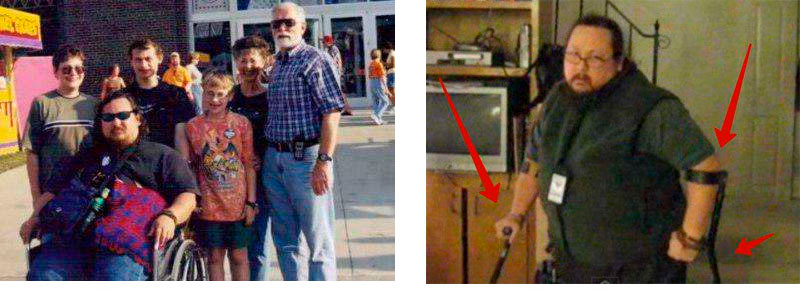

По-изгодно е да лекувате ставите си веднъж, отколкото да ги лекувате постоянно!
артропатията ме докара до инвалидност за няколко месеца, но с помощта на четири растения успях бързо да възстановя хрущялите в ставите
Искам да споделя с вас моята история за това как, като здрав човек, за два месеца се озовах в инвалидна количка, а след това бързо се възстанових и се изправих на крака!

Казвам се Александър Йорданов и съм на 46 години. Никоа през живота си не съм вярвам, че болките в ставите могат да се окажат нещо толкова сериозно. Всички си мислим: „Мога ли да съм и аз някой ден в инвалидна количка? Не, няма начин...“ – вероятно като четете тези думи, всички си мислят че аз съм подценил обикновената болка в ставите...
Всичко започна в един обикновен ден по път към работа. Почувствах в коленете не много силна, но внезапна неприятна болка. Отначало, разбира се, не му придадох голямо значение, като си помислих, че само ще мине и да не се разсейвам по дреболии, досега всичко само ми е минавало. Този път обаче болката не минаваше, а точно обратното, засилваше се и ставаше непоносима с всеки изминал ден в продължение на два месеца по време на ходене.
Реших, че съм се преуморил и натоварил ставите от активния живот (работа на крака, отделно спортувах), помилсих си, че трябва да си почина и си взех отпуска, за да разтоваря максимално краката, да се мажа с мехлеми – вярвах че със сигурност ще ми помогне. Най-вероятно мнозина от уважаемите ми читатели във вашите случаи са разсъждавали по същия начин. Но от тези мисли и мазилата не ми ставаше по-леко, болката се усилваше, като това ставаше много бързо в кратки срокове. Стигна се до това, че аз след месец не можех да си стана на краката и почнах да се предвижвам по апартамента с инвалидна количка, пиех болкоуспокояващи поне по две таблетки на ден.
Накратко, ситуацията от малка неприятност уверено и бързо премина в ужасна реалност, дори не можех да си представя, че след няколко месеца няма да мога да стана на крака поради ужасната болка!
Ако си се разболял – трябва спешно да се отиде на лекар, той знае много за болестите, ще ги лекува до последния ви ден на тази Земя, това е негова работа

Ножа опря до кокала, трябваше да се ходи на лекар, жена ми настояваше. Терапевтът ми даде направление за ревматолог, при когото успях да се доредя чак след месец, оказа се че не само аз съм с проблемни стави, такива като мен имаше много. Посрещна ме много възрастна лекарка, без нищо да ми каже, ме прати на рентген и анализ на кръвта/урината. На втората визитация за няколко минути ми постави диагноза – някаква артроза, първична или вторична – вече не помня, но не е толкова важно.
Диагноза и толкова, мен не ми е толкова интересно как се казва, а как час по-скоро да се излекувам, а и после да няма последствия за други органи или части на тялото, И ето тук ме чакаха неприятни открития, причината за този проблем според лекаря-бабичка според нея е възрастов! Така и каза: „Това ви е от възрастта“ Каква възраст?! Само на четиридесет и шест съм! Дъщеря ми е на 2 годинки, аз съм млад татко, а не стар ревматик, тоест артрозник! Но още повече ме „зарадваха“ препоръките за лечението, те бяха три:
Първо – да прекратя всички физически натоварвания, а те отдавна са преустановени, болката бързо отучва човек да носи тежести.
Второ – трябва да се мажа със сгряващи мазила, които се рекламират цял ден по телевизора. Завиждам понякога на хората, на които може лесно да им се внуши, че ако мажат и втриват нещо ще им мине. И те се мажат и минава, а аз първо трябва да разбера защо, как гела минава с минимална активност през кожата, през всички меки и съединителни тъкани, за да достигне до ставите и да излекува нещо. Ето физиката на този чудесен процес някой може ли да ми обясни? И се мажа отдавна, но колкото и гелове не използвах – смисъл няма.
И третата препоръка бе да пия някакви таблетки, които спомагат за възстанояването на хрущялната тъкан, четем внимателно – не възстановяват, а само помагат при възстаноявването. И това е! Ходете, търпете, ако имате пари – заповядайте...
Изключихме медицинските заведения, понеже разбрахме че там няма да ме излекуват. Те не се отказват да лекуват, но да ме излекуват там не могат. И ни се стори, че те сами не разбират от какво е причинен недъга, а ако не знаят причината, тогава как ще ме излекуват? Ако таблетките (които никак не са евтини) само спомагат, то на какво помагат и помагат ли изобщо? Какво трябва да възстановява тази моя тъкан с таблетки или без? И защо преди са се възстановявали тъканите, а сега престана? Много въпроси... разбира се, има още вариант да се отиде в частни клиники, но нещо ми подсказваше, че резултатът ще е същия, само че по-скъпо. Не вярвам нито в платната медицина, нито в платното образование. Проблема не е в лекаря, пенсионерка в районната клиника или по-млада дама в модерен медицински център, а в самия подход към проблема. Как може да лекуваш нещо без да му знаеш причината за зараждането? Това е като да лекуваш сива котка в тъмна стая, може да я хванеш, а може и да не я. Но мен ме боли – на мен ми трябва сигурен начин, за да се излекувам.
Изпаднах в депресия. Имах паника, не знаех какво да правя, почнах да губя надежда.. Но жена ми слава Богу не се предаде, за което съм и много благодарен! Нейната фраза беше такава: Ако исках да не се лекуваш, а да се излекуваш, тогава трябва самостоятелно да се справяме с теб.
Със самолечение не трябва да се занимавате, това е закон, а със самоизлекуване – само сам и може. Жена ми почна да мисли и да се чуди как да се справи с болестта, измисли нещо и реши да експериментира, осъзнавайки цялата безчовечност на която съм обречен. И започна със самообразование.
Интернет, разбира се, е страхотно нещо, за много кратко време можете да се запознаете с легендите от дълбока античност и да слушате лекция на професор отвъд Океана в реално време. Разберете какво пише за ставите в китайския „трактат за жълтия император“ и какво мислят йогите, привържениците на Аюрведа или Веданта за това и как са управлявали в Майка Русия.
Помогнах и на жена си да потърси информация, тъй като дни наред нямаше какво да се прави в леглото. След като прекарахме 1,5 месеца в изучаване на цялата налична информация за лечението и възстановяването на ставите, ние съставихме за себе си списък с пет естествени „диаманта“, които бяха използвани по различно време за лечение от императори, крале, генерални секретари, йоги, тибетски монаси , Старообрядци и много други.
На първо място е «Елхово масло». Екстрактът от ела е в чиста форма концентрат от молекули, които изграждат хрущяла и които с невероятна скорост възстановяват хрущялната тъкан.
Екстракт от рог на марал“. За първи път е използван в Алтай. Характеристиката на рогата на марала е уникалната им способност да втечнява и премахва натрупванията на сол. Те незабавно правят солните отлагания в ставите по-разхлабени , и след 15-19 дни редовна употреба напълно разтваря солите в ставите и гръбначния стълб. Съгласете се, много полезно свойство.
Биогенният прополис“ е най-бързото естествено противовъзпалително лекарство. Прополисът бързо унищожава всеки възпалителен процес. От незапомнени времена се използва за лечение на ишиас, ревматизъм, полиартрит, подагра и разширени вени.
Блатен петолистник“. Той блокира болката, а също така действа като имуностимулант, възстановява автоимунния процес на организма, отсъствието на който е отправна точка на ставни заболявания и деградация на хрущяла. Блатният петолистник се използва при лечение на остеохондроза, артрит и ревматизъм. Особено популярно бе в началото на век.
Червен корен. Специално написах за четири лечебни съставки, петата е червен корен, той не лекува съвсем ставите, но е не по-малко важен. Червеният корен има свойството да усилва ефекта на лекарствените компоненти , а също така: осигурява защита на костната и хрущялната тъкан. С други думи, първите четири растения лекуват ставите и хрущялите, а червеният корен ЗАПАЗВА постигнатия резултат в продължение на десетилетия.
Жена ми намери това, което ще ме излекува!
В продължение на 2 месеца търсихме различни средства, които включват този състав. Аз лично се разстроих, вече се съмнявах, че нещо може да ми помогне, всеки на мое място би се съмнявал.
Но жена ми не се предаде! Тя беше постоянно в търсене и някак случайно попадна на статия от лекар, който говори за средство, което възстановява всеки хрущял, всяка става. Запалихме се ,жена ми се запозна с рецептата за лекарството, за което се говореше и съставът съвпадна напълно с нашия списък по-горе! Има рог на марал и прополис, масло от ела, червен корен, като цяло, целия списък от най-добрите екстракти за стави.
Радваме се, че намерихме това, което търсихме! Но ни настигна една неприятност, уволниха ме от работа, понеже инвалид на никого не му трябва. С парите имахме проблеми, понеже заплатата на жена ми е малка. Цената на лекарството бе висока и постоянно се променяше, затова жена ми в продължение на 2 седмици го гледаше по различни сайтове след работа и го търсеше на достъпна цена. И в един прекрасен миг тя го намери с намаление през сайта на този лекар. Тя веднага ми съобщи и аз незабавно поръчах, понеже можех да изпусна момента! Буквално след 10 минути ми звънна приятно момиче и започна подробно да ми разказва за продукта:
Лекарството действа почти мигновено, подвижността на ставата се възвръща още на 2-рия ден и болката обикновено изчезва след 8-12 часа. Но за лечението и затвърждаването на резултата лекарството е необходимо да се приема в продължение на 27-35 дни. Това е около 4-5 опаковки от лекарството, произвежда се под формата на еднократни пластмасови ампули с гел.
– Госпожице, не се обиждайте, но аз за този препарат знам повече, така че може да не се стараете. Опаковайте ми по-добре веднага 10 броя.
– Извинете, но 10 броя не мога да ви изпиша. Поради голямото търсене с преференциалната програма можем да ви предложим 5 опаковки, а и обикновено в 99% от случаите 5 опаковки са достатъчни, за да се излекувате напълно.
– Стига де! Чаках 2 седмици, исках да поръчам, за да имам допълнително.. Ех добре, нека са 5…
Исках да поръчам веднага 10, за всеки случай. Все пак е рядко лекарсвто, не е ясно дали после ще го намериш, а тук е дори с намаление. В края на краищата, можех да го подаря на някого, по такава е политиката на компанията –не повече от 5 броя на един човек по време на преференцилна програма.
Общо взето разрешиха да поръчам само 5 опаковки от това лекарство, потвърдиха поръчката, казаха - изчакайте, поръчката ви ще пристигне по пощата (оказа се малко по-дълго по куриер). Трябва да кажа, че отдавна не съм получавал нищо по пощата, затова се напрегнах малко. И все пак, кой знае, тази поща, те могат да загубят лекарството ми и след това ще чакам още 2 месеца, за да се появи отново с намаление.
За щастие всичко се получи. Изненадващо бързо, само за няколко дни, поръчката ми вече беше в пощата. Жена ми бързо прибра поръчката вкъщи.
Резултатите. Те поразяват!
Аз наистина разбирах, че лечението ще е относително бързо, курса на лечение е само 30-35 дни, но че ефекта, който ще почувствам ще е ТОЛКОВА скоро – това бе подарък от съдбата! (по-долу съм написал усещанията си след 1 седмица, след 2 седмици и т.н.).
След като си намазах коленете преди лягане, аз легнах да спя по гръб, както обикновено правя, понеже по друг начин не мога – боли ме. Събудих се обаче легнал НАДЯСНО, докосващ с колена леглото, но не ме болеше! Аз внимателно започнах да си вдигам краката, отново нямаше болка! За 8 часов сън с това средство болката изчезна! Аз се вдигнах, положих на пода крака, исках да стана, но се чу звук от болните стави и почувствах лека болка. Добре, ще трябва да с почакаме с ходенето, все пак са минали само 8 часа си казах аз.
В инструкциите бе написано: нанесете на болните стави веднъж преди лягане. Започнах да се мажа 2 пъти, за да забързам процеса. Използвах найлон, за да запазвам топлината.
Дневник за изцелението ми
Похарчих шест месеца, за да намеря този инструмент и изчаках още 2 месеца, за да е наличен. Но си заслужаваше!
Общо взето, тези мои експерименти над тялото ми дадоха прекрасни резултати, стопроцентно излекуван съм, сега се опитвам да върна усещанията си по дни.
8 часа след лечението:в състояние на покой болката изчезна. Болевите усещания останаха.
1 ден: болката изчезна напълно. Отокът спа. Мога да сгъвам колене, но ставите все пак щракат, болят.
7 ден най-накрая щраканията в ставите изчезнаха. Движа се лесно, сгъвам колене, лесно мога да стана на крака, но още не съм рискувал да ходя.
14 ден: Чувствам се здрав! Обиколих апартамента, слязох на улицата на разходка - без дискомфорт!
28 ден: Чувствам се чудесно, направих 1 км бягане и изобщо не почувствах НИКАКВА БОЛКА! Чувствах се сякаш съм се родил отново!
35 ден: направих си анализи и отидох на рентген. Без никаква артроза! Хрущялите ми са като на 30-годишен. Докторката реши, че на предишния рентген е имало някакъв дефект, поради което диагнозата артроза била грешна.

По-лесно е да излекуваш ставите веднъж – отколкото постоянно да ги лекуваш!
Похарвих много пари за възстановяването на ставите, за визитации при лекари, за болкоуспокояващи, дори за инвалидната количка. И разбрах едно – по-добре един път да се излекуваш и да похарчиш около 200 лв, отколкото постоянно да купуваш мазила, болкоуспокояващи, таблетки, да ходиш на лекари, рентгени и други скъпи изследвания. Дори факта, че можех да стана инвалид, по-добре да се купи веднуж курса за лечение и да се излекуваш, отколкото след време да не можеш да ходиш, замислете се.. Но да ви кажа, попадах на най-различни лекарства, които всъщност бяха фалшиви, не си харчете времето. Разказах ви историята си, доверете ми се. Пожелавам ви всичко най-добро!!!
P.S. Скъпи читатели, благодаря Ви, че сте прочели статията до края и, на мен ми е приятно. Като благодарност за вашето търпение, по-долу можете да оставите заявка за препарата. Сега се продава с намаление веднуж на два месеца, но търпението ще ви се отплати. Забравих да ви кажа, че препаратътсе казва .
Ето снимка:

В търсенето на това средство, аз похарчих с жена ми половин година, а тази ценна информация Вие получавате за 5 минути прочит, понеже разбирам, че мнозина от вас имат нужда от помощ. Споделяйте в коментарите вашия успех. Ако знаете подобни средства, задължително споделете!
За това, че съм на крака съм благодарен на жена си, която не ме изостави, която търсеше начини да ме вдигне на крака. Много я обичам, ценя и уважавам!
Акцията протича до включително. За всеки етап се отделят 30 хиляди единици от препарата. И се изкупуват за 3-4 седмици. И при това, че дори няма никаква реклама по ТВ или радиото. Хората предават информацията от уста на уста, препоръчват го на приятели и роднини. Дори за нас това бе неочаквано, че информацията за ще се разпространява толкова бързо.
Затова, ако имате късмет и успявате да поръчате до посочената дата, препоръчвам ви да оставите заявка за колкото се може по-скоро. Повторна преференциална програма може и да няма тази година.
На количеството препарат преди изчерпване е:
43 бр.


Ура! Бях сред късметлиите, успях да поръчам за ! Изненадващо просто!